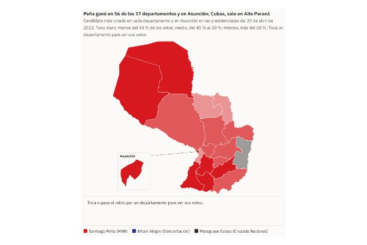
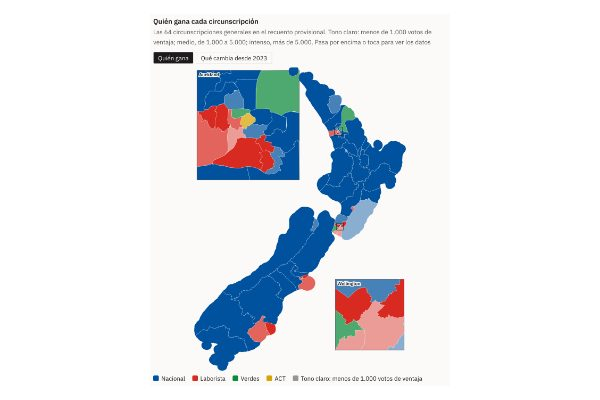
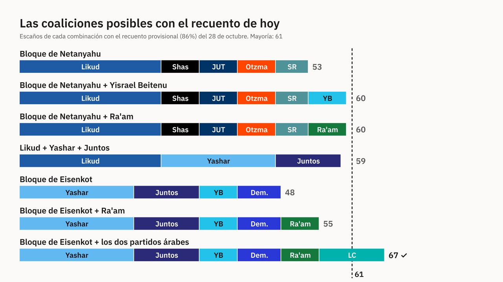
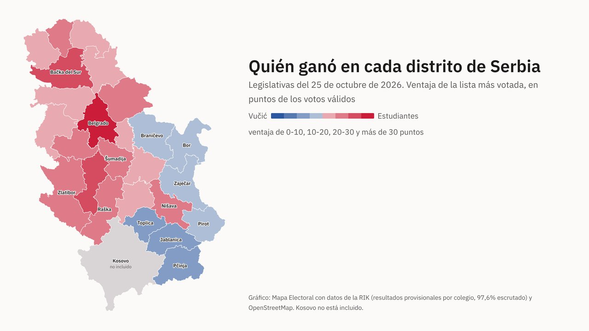
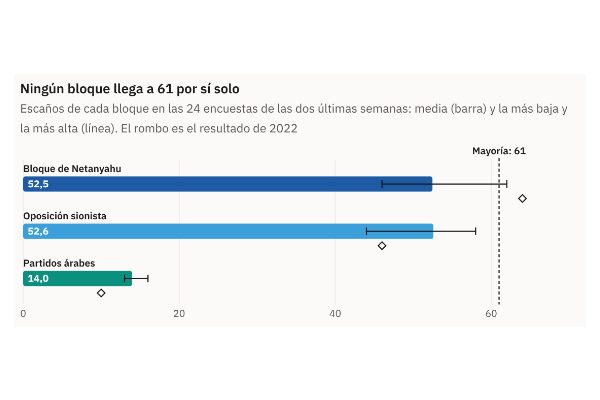
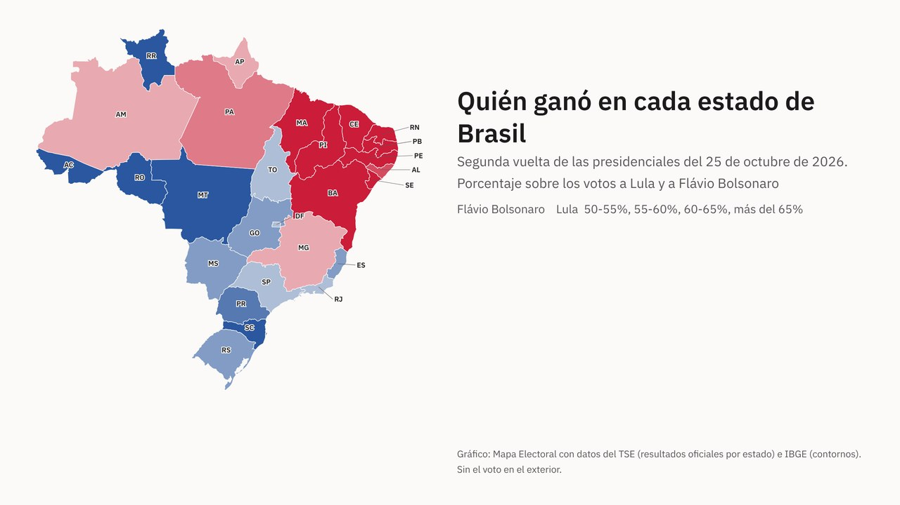

Mapa Electoral
Internacional
Elecciones en el resto del mundo contadas con mapas: quién ganó en cada estado, distrito o municipio, y qué cambió. Cada cifra, con su fuente oficial. Las elecciones españolas, en Actualidad.
Especial
Elecciones de medio mandato en EE. UU. 2026
- Así queda el CongresoSenado y Cámara en barras y hemiciclos; pestañas con los elegidos, los gobernadores y los cambios de partido
- Los distritos que cambian, en 3DRecorrido con scroll por los distritos que pasan a los demócratas: los más ajustados y los vuelcos más grandes
- La Cámara, distrito a distritoEl mapa de los 435 distritos con el ganador de cada uno
- Resultados y resumenSenado, Cámara y gobernadores: quién gana y qué escaños cambian de manos
- La noche electoral, hora a horaLos cierres de urnas, estado a estado
Las demás elecciones

10 de noviembre de 2026 · ParaguayParaguay destituye a Santiago Peña, el presidente que en 2023 ganó en 16 de los 17 departamentos y en AsunciónEl Senado lo condenó el viernes por mal desempeño de funciones, con 44 votos de 45, por el hundimiento de Ueno Bank, un banco del que fue accionista. Pedro Alliana, su vicepresidente, gobernará hasta 2028. Peña había ganado con el 42,7 % de los votos; de los 17 departamentos, solo perdió Alto Paraná.
7 de noviembre de 2026 · Nueva ZelandaLos laboristas ganan el voto de partido por 3.650 votos, pero la coalición de Luxon suma 67 de los 131 escaños en el recuento provisional de Nueva ZelandaEl Partido Nacional del primer ministro cae del 38,1% al 29,2%, pero gana 42 de las 71 circunscripciones. Con NZ First y ACT llega a 67 escaños, uno más de los 66 de la mayoría en una Cámara que crece a 131. Faltan los votos especiales: el resultado oficial se publicará el 27 de noviembre. 3 de noviembre de 2026 · Nueva ZelandaEl partido del primer ministro de Nueva Zelanda cae del 38% al 29,5% y llega casi empatado con los laboristas a las elecciones del sábadoChristopher Luxon gobierna desde 2023 con dos socios a su derecha. La última encuesta de 1News–Verian da al Partido Nacional el 29,5% y a los laboristas de Chris Hipkins el 28,8%, y deja a la coalición con 58 escaños, por debajo de los 61 de la mayoría. El mapa de las 71 circunscripciones muestra quién habría ganado cada una en 2023 con los límites nuevos.
3 de noviembre de 2026 · Nueva ZelandaEl partido del primer ministro de Nueva Zelanda cae del 38% al 29,5% y llega casi empatado con los laboristas a las elecciones del sábadoChristopher Luxon gobierna desde 2023 con dos socios a su derecha. La última encuesta de 1News–Verian da al Partido Nacional el 29,5% y a los laboristas de Chris Hipkins el 28,8%, y deja a la coalición con 58 escaños, por debajo de los 61 de la mayoría. El mapa de las 71 circunscripciones muestra quién habría ganado cada una en 2023 con los límites nuevos. 2 de noviembre de 2026 · BulgariaBulgaria elige a la candidata más cercana a Rusia; el europeísta ganó en 8 de los 265 municipios en primera vueltaIliana Yotova, presidenta en funciones y aliada del primer ministro Rumen Radev, ganó la segunda vuelta con el 57,6% tras una campaña dominada por la guerra de Ucrania y los ataques con drones en el mar Negro. Su rival, el ex primer ministro en funciones Andrey Gyurov, quería una Bulgaria «aliada fiable de la OTAN». En la primera vuelta Gyurov solo ganó en la capital, en las grandes ciudades y en el voto del extranjero. En la provincia de Kardzhali votó el 8,6% del censo.
2 de noviembre de 2026 · BulgariaBulgaria elige a la candidata más cercana a Rusia; el europeísta ganó en 8 de los 265 municipios en primera vueltaIliana Yotova, presidenta en funciones y aliada del primer ministro Rumen Radev, ganó la segunda vuelta con el 57,6% tras una campaña dominada por la guerra de Ucrania y los ataques con drones en el mar Negro. Su rival, el ex primer ministro en funciones Andrey Gyurov, quería una Bulgaria «aliada fiable de la OTAN». En la primera vuelta Gyurov solo ganó en la capital, en las grandes ciudades y en el voto del extranjero. En la provincia de Kardzhali votó el 8,6% del censo.
28 de octubre de 2026 · IsraelCon todo el voto contado, Netanyahu solo llega a 61 escaños si suma a Ra'am, el partido islamista árabeCon los 5,67 millones de votos contados, los cinco partidos del Gobierno saliente suman 53 de los 120 escaños de la Knesset y los cuatro de la oposición sionista, 48. Los dos partidos árabes tienen 19, y Ra'am, con 8, es el único socio con el que Netanyahu llega a 61. Estas son las combinaciones posibles, y el mapa del voto por localidad.
27 de octubre de 2026 · SerbiaVučić ganó en los 25 distritos de Serbia en 2023; los estudiantes le han ganado en 18 y en Zaječar el recuento va por 31 votosLa Lista Estudiantil saca el 53,4% de los votos válidos y la de Aleksandar Vučić, el 39,7%, con el 97,6% de los colegios escrutados. Vučić perdió menos de 100.000 votos frente a 2023: lo que cambió fue que fueron a votar casi medio millón de personas más. Belgrado aporta casi seis de cada diez votos de la ventaja.
27 de octubre de 2026 · IsraelSolo una televisión le daba la mayoría a NetanyahuEn las 24 encuestas de las dos últimas semanas, su bloque se quedó en 52,5 escaños de media, ocho y medio por debajo de los 61. Solo las cinco de Canal 14 le daban la mayoría. Y el partido nuevo de Gadi Eisenkot iba por delante del Likud en 16 de ellas.
26 de octubre de 2026 · BrasilLula pasó de perder por 2,2 millones de votos a ganar por 4,4: en el mapa de Brasil solo Minas Gerais cambió de colorEn tres semanas, Lula sumó 10,4 millones de votos y Flávio Bolsonaro, 3,7. Casi la mitad de la subida de Lula salió del Sudeste, donde aun así perdió. Frente a 2022, 25 de los 27 estados votaron al mismo candidato, y la región Norte se decidió por 1.079 votos.